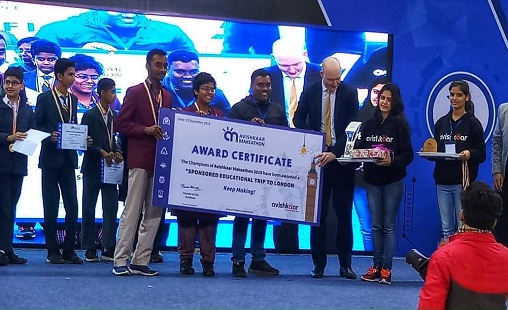
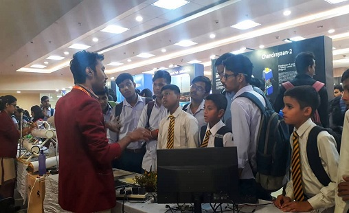
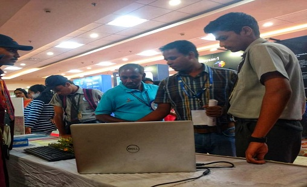
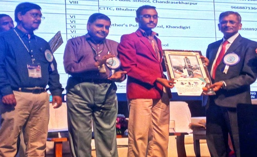
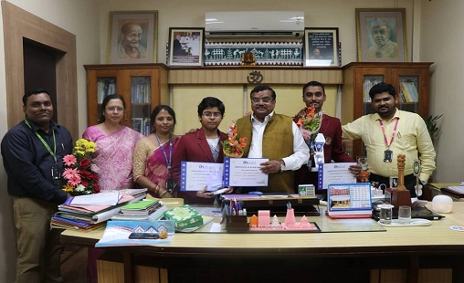
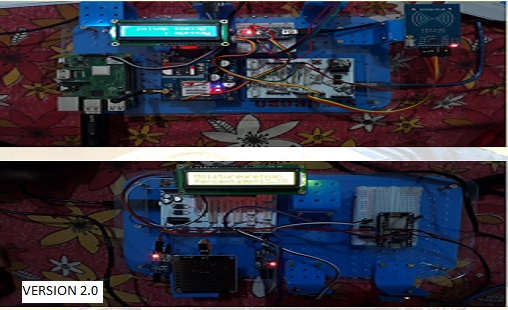
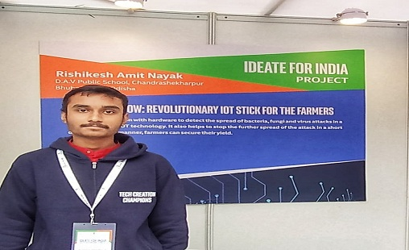

December 20, 2019
Grandson of a farmer, Bhubaneswar’s Rishikesh Amit Nayak has created a device which can detect a bacterial attack on crops and alert farmers on the type of bacteria, potential diseases and prevention.

Did you know that 80 per cent of the time, the reason behind crop failure is bacterial attack? And by the time the farmer realises this and sends the leaf samples to the National Bank for Agriculture and Rural Development , and they get back with the correct analysis, it is too late. Rishikesh Amit Nayak had seen his own grandfather, who was a farmer, dejected by such circumstances. So, of course, he had to do something. "My father is a professor and he is the one who encouraged me to learn programming in class VI," says the 16-year-old, talking about his positive influences. And before you ask what this farming problems has to do with programming, let us tell you about the device Rishikesh ideated.

BHUBANESWAR: Farmers facing crop failure, mostly due to pest attacks, have a ray of hope to save their produce. A Class XI student has developed a device that can alert even an uneducated farmer about pest and bacteria attacks.‘Kishan Know’, the device, has been developed by 16-year-old Rishikesh Amit Nayak of DAV Public School, Chandrasekharpur. The device functions on realtime data to detect bacteria, fungi and virus in crops using the Internet of Things (IOT) to arrive at a micro-level solution.

Can there be a link between farming and programming? Why not? Ask Rishikesh Amit Nayak, a student of DAV Public School, Chandrasekharpur, because he created such a link.

Emotionally moved by reports of farmers committing suicide because of crop failure, 16-year-old Rishikesh Amit Nayak thought someone should go to the root of the problem.Two years later, he has come up with a device, which can alert even an uneducated farmer about pest and bacteria attacks in his field and initiate remedial action to save the crop.“Crop failure has many reasons, but the most common is pest attack. Once the crop is attacked by pests and the farmer is not able to detect it, it can destroy the entire crop,” Amit, a student of Class-XI at the DAV Public School, Chandrasekharpur here, said.

Champion DAV CSPUR to represent India.
In the prestigious STEM Avishkaar Makeathon 2019 the team comprising Rishikesh Amit Nayak and Ritwika Panda of class 11 of DAV Public School Chandrasekharpur has been adjudged as the champions and invited to represent India as the only school from the State at London international science event.

A class XI boy has invented a device that can detect pests at an early stage and thus prevent crop failure.Rishikesh decided to develop a device that could detect insects on the crops at an early stage so that necessary precautions and remedial measures can be taken to save the crops.
A Remarkable Device

Farmer suicide due to crop failure is very common. Hailing from a farmer family, I was aware of the issue at a very young age. In 2017, when I was in class 9, I used to read a lot about farmer suicides in newspapers and decided to research on it. I found that 80 per cent of crop failure is due to a bacteria attack and while we have solutions for weather conditions, there is very little done to prevent bacterial attack on fields. I decided to work for this cause,” he said.

Moved by reports of farmers committing suicide because of crop failure, 16-year-old Rishikesh Amit Nayak decided to understand the root of the problem.Two years later, he has come up with a device that can alert even an uneducated farmer about pest and bacteria attacks in the field and initiate remedial action to save the crop.